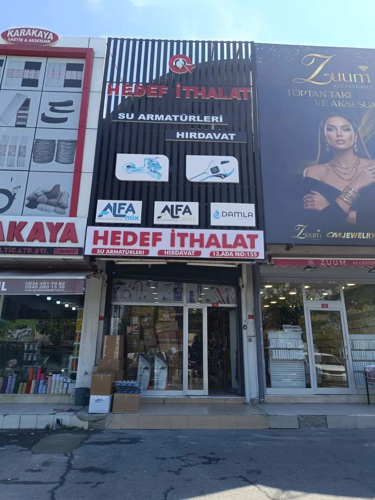

Vitrin Folyo ve Reklam Uygulamaları
Vitrin üzerindeki yazılar, kampanya görselleri ve cam yüzey kaplamaları için alanın fotoğrafını ve uygulanacak ölçüleri paylaşabilirsiniz.
Fiyat paylaşımı sitede yapılmaz. Ölçü ve ihtiyacınıza göre size özel teklif hazırlanır.

Gerçek proje fotoğrafıProjenize uygun çözümü birlikte belirleyelim.
Ürün türünü henüz bilmiyorsanız ölçüyü, kullanılacak alanı ve beklentinizi yazmanız yeterlidir.
Vitrin folyosu nerelerde kullanılabilir?
Cam vitrinde kurumsal kimlik, kampanya, bilgilendirme ve dekoratif grafik uygulamaları yapılabilir. Şeffaf, opak veya delikli folyo gibi seçeneklerin uygunluğu görünürlük ve ışık ihtiyacına bağlıdır.
Uygulama öncesi hangi ölçüler alınır?
Camın toplam genişliği ve yüksekliği, çerçeve bölümleri, kapı yönü ve yüzeyin durumu önemlidir. Fotoğrafta kapı ve pencere bölümleri görünürse tasarım planı kolaylaşır.
İç ve dış mekân uygulaması nasıl ayrılır?
Güneş, nem, temizlik ve yüzey türü gibi etkenler malzeme seçiminde rol oynar. Baskı, kesim ve montaj ihtiyacını formda belirtebilirsiniz.
Uygulama fotoğraflarımız
Bu fotoğraflar projelerimiz sayfasındaki çalışmalarımızdan seçilmiştir.

Teklif vermeden önce bilmek isteyebilecekleriniz
Kesin fiyat; ölçü, malzeme, adet ve işin kapsamı görüldükten sonra belirlenir.
Vitrine logo ve çalışma saatleri birlikte yazılabilir mi?
Evet. Yazı yerleşimi tasarıma ve cam ölçülerine göre planlanabilir.
Sadece folyo baskı mı yaptırabilirim?
Uygulama gerekip gerekmediğini formda seçebilirsiniz.
Fotoğraf göndermek gerekli mi?
Zorunlu değil, ancak vitrin ya da uygulama yüzeyinin fotoğrafı ölçü ve teklif sürecine yardımcı olur.
Projenizi anlatın, birlikte netleştirelim.
Ölçü, malzeme ve montaj bilgilerini seçin; talebinizi WhatsApp'tan doğrudan bize iletin.